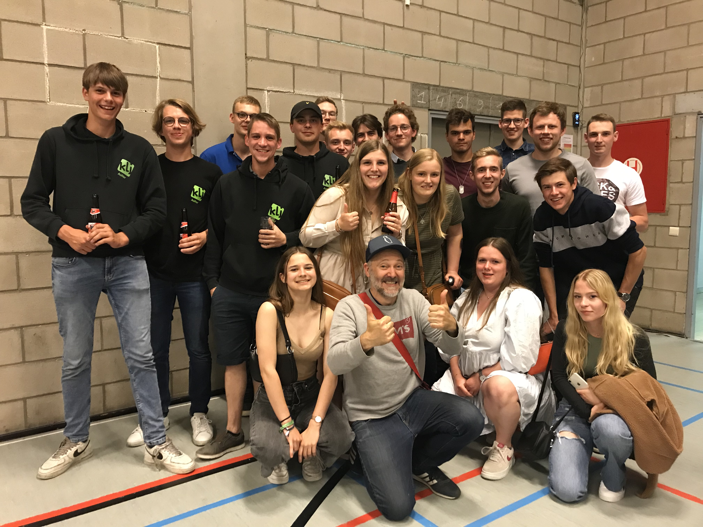

KLJ Aalter - SHOTKOT @ avondmarkt
Deze zomer organiseert KLJ Aalter zijn eigen zomerfeesten op vrijdag 29 en zaterdag 30 juli. Tijdens dit weekend openen we op het grasplein bij ons KLJ lokaal in Lotenhulle een gezellige zomerbar met heerlijke bieren, frisdrank en snacks.
Dit alles wordt ook voorzien van een streepje muziek. Met vrijdagavond een portie live bands, zaterdagavond kunnen de beste danspasjes bovengehaald worden op de zomerse plaatjes van enkele DJ's.
LINE UP
Vrijdag 29/07 Bands:
- Tidal Waves
- APOTH
- The Collabs
Zaterdag 30/07 DJ's: TBA

Facebook: KLJ Aalter
Youtube: KLJ Aalter
Stef Corijn: hoofdleider
0471 36 76 61
LINE UP
Vrijdag 29/07 Bands:
- Tidal Waves
- APOTH
- The Collabs
Zaterdag 30/07 DJ's: TBA
Foto van de maand
Zaterdag 14 mei gingen we naar de nieuwe comedyshow "Influencer" van stand-up comedian Henk Rijckaert. Wij hebben ons alvast goed geamuseerd!

Links
Instagram: @kljaalterFacebook: KLJ Aalter
Youtube: KLJ Aalter
Contact
Email: info@kljaalter.beStef Corijn: hoofdleider
0471 36 76 61
Adres
Melkerijstraat 14 Lotenhulle/Aalter 9880